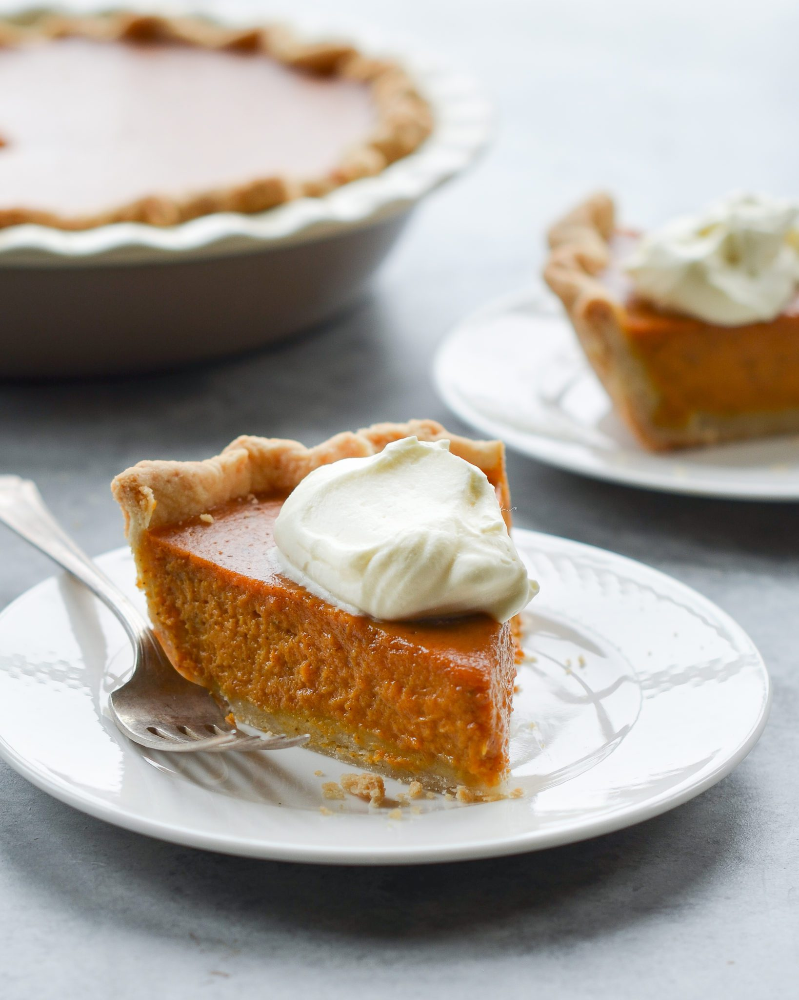

< Back to homepage
Perfect Pumpkin Pie

For such a seemingly simple dessert, pumpkin pie can be tricky to get right. Over the years, I’ve tested at least a dozen recipes, and each one was plagued with either a filling that wouldn’t set properly, a massive crack down the center, or a lousy crust (i.e., soggy, doughy or shrunken). Whoever coined the term “easy as pie” had obviously never baked a pumpkin pie!
Part of the challenge with pumpkin pie is that there are a lot of variables. First, there’s the type of pan you use: ceramic, glass, and metal all behave differently. Second, no homemade pie crust is ever the same — and crust by nature is finicky. Finally, pumpkin pie filling is a custard, which means you have to remove it from the oven while it’s still a little jiggly, which makes it difficult to gauge doneness. Take it out too early and it never sets up; cook it too long and it cracks down the center (or, take it out at just the right time and still have it crack down the center!).
Ingredients
- 1 (9-inch) Homemade Pie Crust or deep-dish frozen pie crust shell (thawed)
- 1 (15-oz) can pure pumpkin (about 1-3/4 cups)
- 1 large egg
- 3 large eggs yolks
- 1/2 cup granulated sugar
- 1/2 cup light brown sugar, packed
- 2 tablespoons all-purpose flour
- 1/2 teaspoon salt
- 1 teaspoon ground cinnamon
- 1 teaspoon ground ginger
- 1/2 teaspoon ground nutmeg
- 1/8 teaspoon ground cloves
- 1/8 teaspoon ground black pepper
- 1-1/4 cups evaporated milk (you'll need one 12-oz can but you won't use all of it)
Instructions
- Preheat the oven to 375°F and set an oven rack in the middle position.
- After blind-baking the crust, reduce the oven temperature to 325°F.
- Make the Filling: In a large bowl, combine the pumpkin, egg, egg yolks, granulated sugar, brown sugar, flour, salt, cinnamon, ginger, nutmeg, cloves, pepper, and evaporated milk.
- Whisk until smooth, then pour the filling into the pre-baked crust.
- Bake the pie for 50 to 60 minutes, until the filling is just set. It should look dry around the edges, but the center should jiggle just slightly if you nudge the pan. Keep a close eye on the pie as it bakes; if ever the crust looks like it's browning too quickly, tent the edges again with the foil strips.
- Let the pie cool on a rack (leave it on the baking sheet) to room temperature, a few hours. Slice or refrigerate until ready to serve.